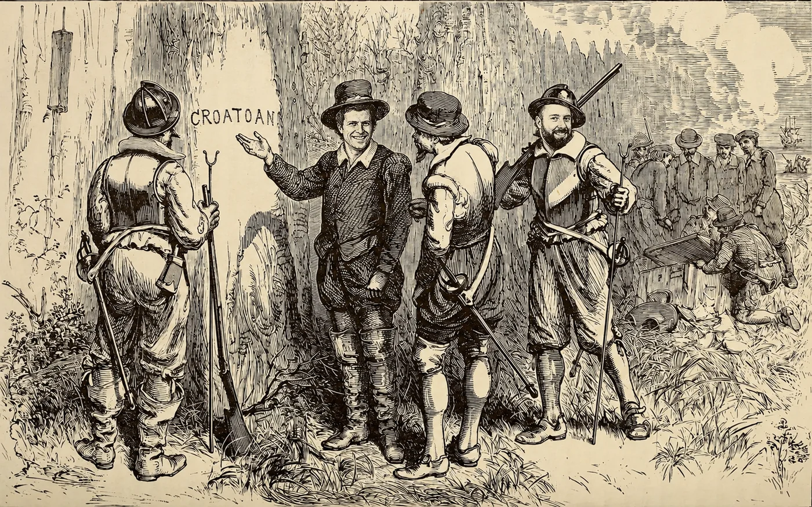

ABOUT
Everything you need to know about Hicks & Fowler, presented with the journalistic rigor it deserves.

BIOGRAPHICAL RECORD
“Children trust us.”
we woo critics with our sensuous and godlike trombone playing, we can pilot bicycles up severe inclines with unflagging speed, and we cook Thirty Minute Brownies in twenty minutes. we are experts in stucco, veterans in love, and outlaws in Peru.
using only a hoe and a large glass of water, we defended a small village in the Amazon Basin from a horde of ferocious army ants. we play bluegrass cello, we were scouted by the Mets, and are the subject of numerous documentaries. we believe in the Oxford Comma. when we’re bored, we’ll build large suspension bridges. we also enjoy urban hang gliding. on Wednesdays, after work, we repair electrical appliances free of charge.
critics worldwide swoon over our original line of corduroy evening wear. we are private citizens, yet receive fan mail. we have both a jpeg and pdf of the Panama Papers in its entirety. we’ve been caller number nine and won the weekend passes. last summer we toured New Jersey with a traveling centrifugal-force demonstration. nick bats .400. his deft floral arrangements have earned Michael fame in international botany circles. children trust us.
nick can hurl tennis rackets at small moving objects with deadly accuracy. michael once read Paradise Lost, Moby Dick, and David Copperfield in one day and still had time to refurbish an entire dining room that evening.
we know the exact location of every food item in the supermarket. We have performed covert operations for the CIA. while on vacation in Canada, we successfully negotiated with a group of terrorists who had seized a small bakery. the laws of physics do not apply to us.
on weekends, to let off steam, michael participates in full-contact origami. years ago, nick discovered the meaning of life but forgot to write it down. michael has made extraordinary four-course meals using only a mouli grater and a toaster oven. nick breeds prizewinning clams. we have won bullfights in San Juan, cliff-diving competitions in Sri Lanka, and spelling bees at the Kremlin. michael has played Hamlet, nick has performed open-heart surgery, and both of them have spoken with Elvis.
The laws of physics
do not apply to us.